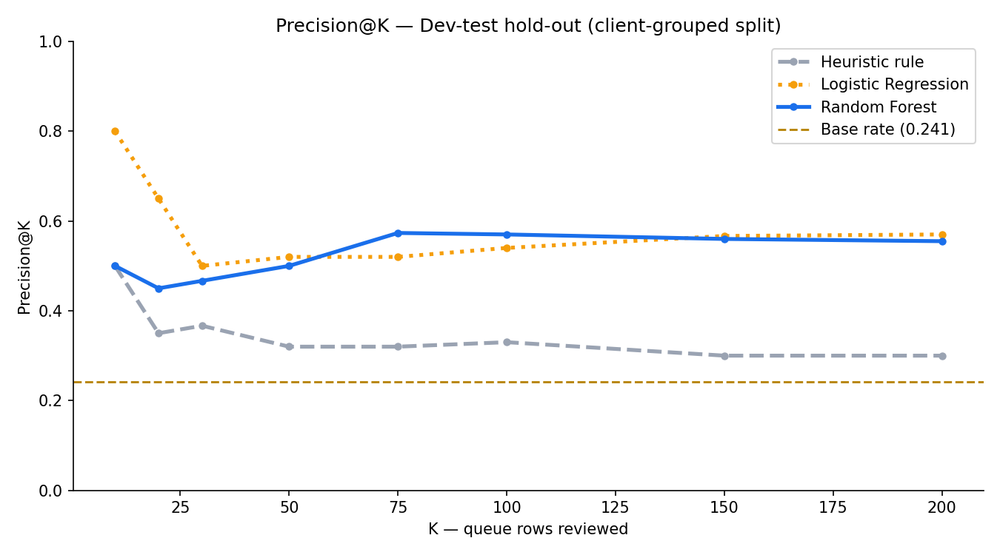
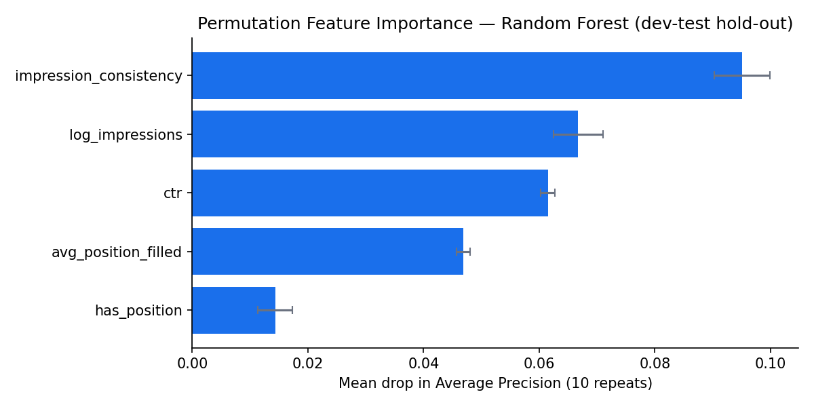

Abstract
Problem. Content teams have a fixed monthly review budget; the decision this system supports is the order of that review, so Precision@K was chosen as the target metric before any model was trained. Setting. Source: the pseudonymized FlyRank internship warehouse (~79 million daily fact rows). Development evaluation uses March 2026 as the feature window and April 2026 as the label window (331,436 eligible content items, 55 clients); validation is grouped by client to prevent client-level leakage. Approach. An audited heuristic baseline is compared against logistic regression and random forest on identical splits. Three leakage boundaries are each enforced in code. Evidence. Logistic regression achieves P@50 = 0.520, P@100 = 0.540, P@200 = 0.570 on the dev-test hold-out (base rate 0.241), outperforming the heuristic rule (P@50 = 0.320) by 0.200. On the sealed May→June test (389,032 rows, base rate 0.441), the random forest and rule both reach P@50 = 0.820. Scope. All relationships are observational; no causal claims about content changes are made. Code, seeds, and a notebook map are provided.
1 Introduction and Decision Context
A page that loses organic impressions silently costs traffic until the decline is large enough to surface in aggregate reporting. The practical question is not whether a page might decline in the abstract, but which pages are worth a human reviewer's attention this month, when review capacity is finite.
This paper builds and evaluates a decision-support ranking system for that problem. The system produces a scored queue: content items ranked from most to least likely to experience an impression drop of 20 percent or more in the following month. A content team using the queue reviews the top rows first; the score is an ordering aid, not an automated verdict.
Three testable claims guide this evaluation:
- C1. Learned models, trained on warehouse search signals with client-grouped splits, outperform the audited heuristic baseline on Precision@K across the operating range (K = 50–200).
- C2. The grouped split is load-bearing: confining clients to one side of the train/test boundary is a necessary precondition for generalizable evaluation.
- C3. Signal patterns predictive in the development window (March→April 2026) are tested once on a sealed forward window (May→June 2026), after all development choices are frozen.
2 Data
2.1 Source and size
All features derive from the pseudonymized FlyRank internship warehouse
(hf://datasets/FlyRank/internship-warehouse), partitioned by month. The daily fact
table contains approximately 79 million rows. Identifiers are pseudonymous hashes
(client_hash_id, content_hash_id) used only for grouping and joining,
never as model features.
2.2 Unit of observation
One observation is one content item for one client, summarized over a monthly feature window. A de-duplication query confirms zero duplicate (client, content, date) rows in the March 2026 partition.
2.3 Feature and label windows
Feature window: month=2026-03 (331,437 raw rows, 331,436 eligible after inner join). All five model features are aggregates over March, fully known at the start of April. Label window: month=2026-04. The label is computed from April data and quarantined from the feature frame.
Label definition:
is_declining = (avg_daily_impressions_apr < 0.80 × avg_daily_impressions_mar).
A 20 percent impression drop over one month is used as the threshold for "at risk."
Development base rate: 0.279 (27.9 percent of eligible items declined).
On the client-grouped test split: 0.241.
2.4 Feature manifest
| Feature | Knowable because | Construction |
|---|---|---|
log_impressions | GSC export complete by March 31 (~3-day lag) | log(1 + total_gsc_impressions) |
avg_position_filled | Same GSC export; missing positions filled with median | avg of daily avg_position where > 0; median-filled |
ctr | clicks ÷ impressions, both in March window | sum(clicks) / sum(impressions) |
impression_consistency | Count of days with impressions ÷ days in month | days_with_impr / days_in_month |
has_position | Binary: at least one day with a valid position reading | 1 if avg_position > 0 any day, else 0 |
2.5 Eligibility and exclusions
Items are eligible if they appear in both the March feature partition and the April label partition (inner join). Items active in March but absent from April are dropped — a documented limitation in §6. The 30,000-row starter dataset used for the heuristic baseline audit uses a different label definition and is not mixed with the warehouse evaluation frame.
3 Methodology
3.1 Baseline
The heuristic baseline is audited on the 30,000-row starter dataset before any model is trained.
Rule: flag if impressions_90d ≥ 500 AND 0 < CTR < 0.5; score as
impressions_90d / CTR. On the warehouse frame (monthly aggregates), the impression
threshold scales to total_monthly_impressions ≥ 170 (≈ 500 × 31/90),
with the same scoring formula. Starter-dataset results are the reference for the rule's absolute
numbers; warehouse results are comparable with the trained models.
3.2 Models
- Logistic Regression — interpretable linear comparator; features scaled with
StandardScaler;class_weight='balanced'. - Random Forest — captures non-linear interactions;
n_estimators=300,max_depth=8,min_samples_leaf=20,class_weight='balanced',random_state=42.
Both models are used through predicted probabilities as ranking scores. All stochastic
components use SEED=42.
3.3 Evaluation design
Primary metric: Precision@K at K ∈ {50, 100, 200}. K=50 is fixed as the operating point before training: the review budget determines the queue head.
Split strategy: GroupShuffleSplit (80/20) grouped by
client_hash_id. An assertion confirms zero client overlap across the boundary
(44 train clients, 11 test clients).
Sealed test: month=2026-05 features → month=2026-06 label. Loaded exactly once, by one script cell, after all development decisions were frozen. No further tuning after this point.
3.4 Leakage controls
Three boundaries, each tested in code: (i) the April label column is quarantined immediately after label construction and never enters the feature frame; a smoke test confirms AUC inflates when it is added (0.847 → 0.885, Δ = +0.038); (ii) a client-disjointness assertion runs before any model is fit; (iii) May/June data is loaded in the final, sealed-test cell only.
4 Results
4.1 Development evaluation
All methods evaluated on the same 11-client hold-out. Base rate on the test split: 0.241 (24.1 percent of held-out items declined by the label definition).
| Method | P@50 | P@100 | P@200 | Note |
|---|---|---|---|---|
| Base rate (random selection) | 0.241 | 0.241 | 0.241 | Label frequency — not a fitted method |
| Heuristic rule (scaled, warehouse) | 0.320 | 0.330 | 0.300 | +0.079 above base at P@50 |
| Logistic Regression | 0.520 | 0.540 | 0.570 | +0.200 above rule at P@50; AUC 0.836 |
| Random Forest | 0.500 | 0.570 | 0.555 | +0.180 above rule at P@50; AUC 0.841 |
Logistic regression has the higher observed mean at P@50 and P@100; random forest has the higher P@100 and is within 0.020 of LR at P@50. Both models substantially outperform the heuristic rule, which is only 0.079 above the base rate at P@50. The rule's position-blind scoring formula (impressions / CTR) sends deep-position pages to the top of the queue — pages that are invisible for structural reasons, not CTR problems.

4.2 Feature importance
Permutation importance computed on the dev-test hold-out (10 repeats, scored by Average Precision).
impression_consistency shows the largest mean drop when shuffled, followed by
log_impressions and ctr. has_position contributes least,
suggesting whether a position reading exists matters less than the position value itself.
| Feature | Mean | Std |
|---|---|---|
impression_consistency | 0.0951 | 0.0048 |
log_impressions | 0.0667 | 0.0043 |
ctr | 0.0615 | 0.0013 |
avg_position_filled | 0.0468 | 0.0012 |
has_position | 0.0143 | 0.0030 |

4.3 Leakage boundary experiment
Adding avg_daily_impressions_apr (label-window data) as a training feature inflates
AUC from 0.847 to 0.885 (Δ = +0.038). The inflated number is retained in the
notebook as a documented trap; the production feature frame excludes the column. All reported
results use the clean feature set only.
4.4 Error analysis
Among dev-test rows scored by the random forest: 6,767 confident false positives (score ≥ 0.70, label = 0) and 1 confident false negative (score ≤ 0.30, label = 1). The asymmetry reflects the model's conservative stance — it systematically scores most items above the 0.30 threshold, erring toward flagging. This is acceptable for a recall-prioritized queue but means precision degrades predictably as K grows.
Decline rate by search position bucket shows that pages in position 11–20 declined at the highest observed rate (0.418), while pages in position 1–10 declined at only 0.195 — consistent with the intuition that page-1 incumbents are more stable. The spread across buckets (0.195–0.418) is meaningful but not large enough to make position the dominant signal alone.
4.5 Sealed-test evaluation (May → June 2026)
The sealed test is computed once, after all development decisions are frozen. The June 2026 base rate (0.441) is materially higher than the development base rate (0.241) — a shift of +0.200 percentage points. Both the rule and the random forest achieve the same P@50 on this month, with the rule's relative performance improving substantially versus development.
| Method | P@50 | P@100 | P@200 |
|---|---|---|---|
| Base rate | 0.441 | 0.441 | 0.441 |
| Heuristic rule | 0.820 | 0.810 | 0.795 |
| Random Forest | 0.820 | 0.770 | 0.735 |
The near-identical P@50 between methods on the sealed month warrants caution: when the base rate is 0.441, even moderate score ordering achieves high precision at small K. The development evaluation (base rate 0.241) is the more discriminating test for comparing methods. The sealed test's primary value is confirming that the pipeline generalizes to an unseen month and that the base rate shift is real — a monitoring signal in its own right.
5 Limitations and Honest Framing
5.1 Silent dropout of no-April-data pages
The inner join between March features and April labels drops any content item active in March that generated no GSC-visible impressions in April. These are precisely the pages most at risk of having "gone dark," yet they are absent from training. This is a label design limitation, not a model tuning issue.
5.2 One development month is thin temporal evidence
The development evaluation uses a single feature month and a single label month. Month-over-month impression volatility is normal; a pattern predictive in March→April may not hold in adjacent windows. The sealed test partially addresses this; a reliable system would be evaluated over multiple monthly cycles before deployment.
5.3 The sealed-month base rate shift is unexplained
The June 2026 base rate (0.441) is nearly double the development rate (0.241). This may reflect a real seasonal effect, a change in GSC data coverage, or a structural shift in the warehouse. Without a second sealed month to compare against, the cause cannot be determined from this analysis alone. Any deployment should monitor the base rate as a first-order drift indicator.
5.4 GSC-visible pages only
The warehouse contains only pages that generated at least one Google Search Console impression. New pages, de-indexed pages, and pages below the GSC visibility threshold are absent. The ranker is designed for established pages with a visibility history.
5.5 Observational relationships only
Every signal-to-outcome relationship here is observational and directional. Low impression consistency is associated with subsequent impression decline in this dataset; it does not follow that improving consistency causes impressions to recover. Decisions based on this queue should be made by a reviewer with domain context, not applied automatically.
6 Ranked Recommendations
The action playbook (w07_action_playbook.ipynb) translates the signal patterns
identified here into a four-tier prioritization queue. Tiers are directional guidance for
human review. Decline rates below are observed in the March 2026 development frame.
| Tier | Signal pattern | N items | Observed decline rate | Suggested review |
|---|---|---|---|---|
| monitor_stable | impressions ≥ 200; does not meet CTR filter | 33,705 | 0.560 | Highest observed rate; review for structural position or coverage issues |
| rank_first | impressions ≥ 500 · position > 20 · 0 < CTR < 0.5 | 7,682 | 0.471 | Address topical depth and internal linking before CTR work |
| ctr_fix_page1 | impressions ≥ 500 · position ≤ 20 · 0 < CTR < 0.5 | 43,446 | 0.452 | Review title and meta description; page is visible but not compelling clicks |
| deprioritize | impressions < 200 | 246,603 | 0.205 | Below visibility floor; dedicate budget elsewhere |
Note that monitor_stable shows the highest observed decline rate (0.560), which
is counterintuitive relative to its name. This reflects the tier assignment logic: items
meeting the impression floor but not the low-CTR criterion may include pages with adequate
traffic but no position guard, resulting in a mix that skews toward declining items.
Tier boundary thresholds should be revisited with a second month of data before treating
them as stable policy.
Human review is required. The queue rank is a starting point for judgment, not a decision. A reviewer should confirm that: the page is live and indexable; the signal pattern reflects its actual strategic role; and no recent deliberate change explains the observed signal before acting.
Drift monitoring triggers: Tier 1 Precision@100 below 0.60 for two consecutive months; base rate shift greater than 10 percentage points over 60 days; Tier 1 volume changing more than 30 percent month-over-month; dev vs sealed Precision@200 gap exceeding 5 percentage points.
7 Reproducibility
All development notebooks run top-to-bottom on Google Colab (free tier). A HuggingFace read
token with gated-repository access is required. Add it as a Colab Secret named
HF_TOKEN before running. SEED=42 is passed to all stochastic
components; DuckDB queries are deterministic.
Baseline score (ML-07)
w04_baseline_score.ipynbHeuristic rule audit; produces baseline_metrics.json.
Action playbook (ML-10)
w07_action_playbook.ipynbFour-tier queue, tier profiling, drift monitoring spec.
8 Acknowledgments and Data Credit
Analysis data from the pseudonymized FlyRank internship warehouse, released for educational use via HuggingFace Datasets. No client names, domains, or raw queries appear anywhere in this work. All identifiers are pseudonymous hashes.
Internship program: FlyRank. Warehouse hosted by FlyRank on HuggingFace.